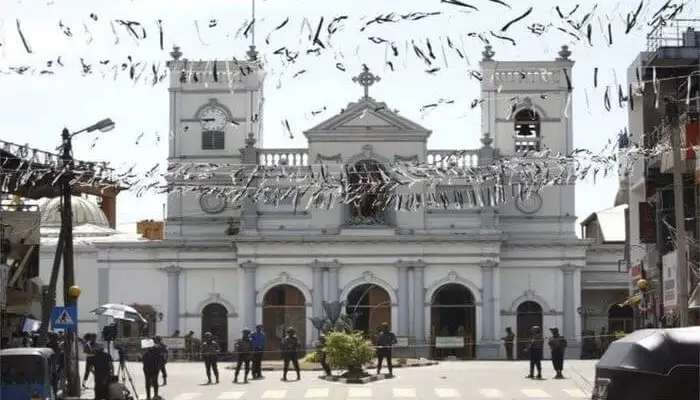

1. Madukanda Vihara

Also known as Madukanda Sri Dalada Viharaya, Madukanda Vihara is a historic Buddhist temple. The historic religious site is located within the Madukanda village, which is at a distance of 4 kilometres from Vavuniya. The Madukanda village and the sacred temple date back to at least 4th century AD. As per the historians, during the journey of the holy Buddha's tooth relic, Madukanda was the 4th resting point. It also happens to be the first location where the first Dalada Maligaya (House of the Sacred Tooth Relic) was founded. Pilgrims who intend to follow the original trail often stop at Madukanda Vihara for rest. Madukanda Vihara is the relic house where the sacred tooth was venerated until the temple in Anuradhapura was built. One can witness fine craftsmanship in the form of intricate carvings made on the granite stepping stones. In addition to the temple, one can even visit the Stupa nearby which lacks the adornments as compared to the Vihara but is of equal historical value. As per a local legend, the giant Nandimithra, a top ranking official in King Dutugamunu's army was born here. Also, one can also visit the former residence, Madukanda Walawwa of a famous Sinhalese chieftain who lived there during the British reign. Traveling to the Madukanda Vihara is easy. Getting to central Vavuniya costs about Rs. 250 for a ride on a three-wheeler. Additionally, the temple offers free accommodation and basic amenities to those visiting the Madukanda Vihara.
2. Kandasamy Kovil

If religion fascinates you and you wish to see the impression of Hindu architecture on Sri Lanka, then you should consider visiting the Kandasamy Kovil. The temple's vibrantly decorated facade will have you believe that you are traveling in South India. The faded, yet interesting temple gateway tower (gopuram) along with the idol decorated in gold and placed in the sanctum will leave architecture lovers delighted. Murugan (or Lord Kartikeya) is the primary deity in this Hindu temple. In addition to being a place of worship, the Kandasamy Kovil temple also has a wedding hall where people can hold marriage ceremonies. The temple is often crowded during major Hindu festivals. Unfortunately, getting a good view of the temple can be marred by many obstacles and therefore you may have to walk through the entire temple complex to have a good look around.
3. Archeological Museum of Vavuniya

The Archeological Museum of Vavuniya is founded, owned, and maintained by the Department of Archeology of Sri Lanka. Unlike its counterparts from the ancient cities, the museum happens to have a modest collection of several antiques. Since it is a a regional museum, it only holds items that were found in or around Vavuniya. If you are merely a tourist without much interest in the museum articles, you may enjoy resting in the shady yard of the Archeological Museum of Vavuniya. On the other hand, history buffs will get excited on seeing the 4th century and 5th-century relics in the form of the pinched face terracotta figurines that are remnants of the Kilinochchi. The hexagonal chamber in the center contains 5th and 8th century Buddha statues made from Mannar limestone. Furthermore, idols of Hindu goddesses and even some Christian elements like the baptismal font are also displayed here. Entry to the Archeological Museum of Vavuniya is free and do bear in mind that photography is allowed only after gaining prior permission.
4 .Grand Jummah Mosque

Located in the heart of the town, the Grand Jummah Mosque towers over the busy market with its sparkling onion-shaped golden domes. The fresh aqua tinted tiles decorating the exteriors make the creation stand out remarkably, especially consclassering that most traditional mosques are white in color. It is a major place of worship for the Muslims. The heart of Islam witnesses a large amount of activity of all those wishing to practice their faith.
5. St. Anthony's Church
St. Anthony's Church is located on the Horowpotana road in Vavuniya. Although the construction of the church is rather plain, the stunning view of the lake accentuates the beauty in its simplicity. The Church is beautifully decorated during Christmas and New Year.
6. Kaludiya Pokuna Forest

Nature lovers can relax and enjoy the true bounties of Mother Earth in the Kaludiya Pokuna Forest. The lush forest houses an array of diverse species that are non-endemic and endemic to Sri Lanka. Despite the presence of a human settlement around the forest, the woodland happens to be untouched by man-made activities. Primates, especially the purple-faced langoor and the tufted grey langoor, can be primarily found here. Trees having high timber value are also seen flourishing here without any human interference. Apart from the thriving flora and fauna, one will also stumble upon ancient ruins and remains of Kaludiya Pokuna.
7. Isinbassagala
Isinbassagala is an offbeat tourist location that is about 21.4 kilometres away from the center of Vavuniya. Perched on a hill, the grand Stupa and the Buddha temple offer a panoramic view of the rolling landscapes available all around. One can see giant statues of King Devanampiyatissa and Lord Buddha along with the Bodhi tree. This temple was commissioned by the King Devanampiyatissa and the original structure has been renovated and repaired in the 20th century. In addition to the temple remains, a cobra-carved stone (Naga Gala) and footprints of Lord Buddha were also discovered during the excavations at this site. These discoveries point out the different epochs of time in Sri Lankan history. Before the doctrine of Buddha was heavily practised, Nagas (Cobra) were the prime deity.
8. Wasgamuwa National Park

One will have to travel about 75 kilometres from Vavuniya to reach the Wasgamuwa National Park located in Polonnaruwa district but it will be totally worth the effort. The natural reserve of Wasgamuwa National Park harbors untamed wildlife and you can view herds of buffaloes and elephants freely roaming around the vicinity. Considering that the influx of tourists is pretty slim at the Wasgamuwa National Park, the region is never crowded. Owing to the less commercialization, visitors can truly enjoy a genuine safari visit.